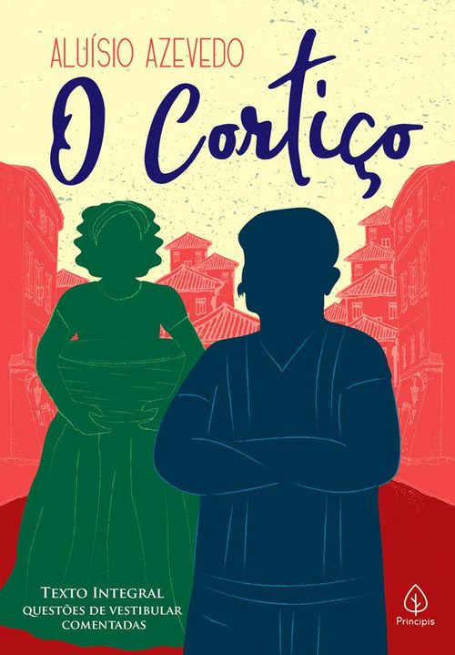
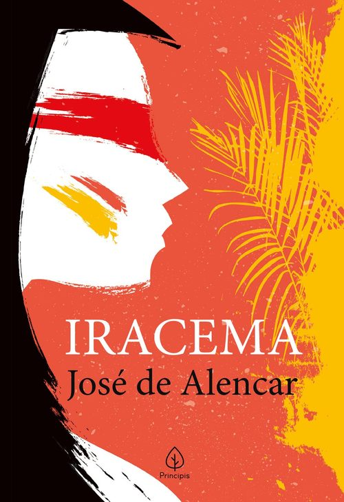
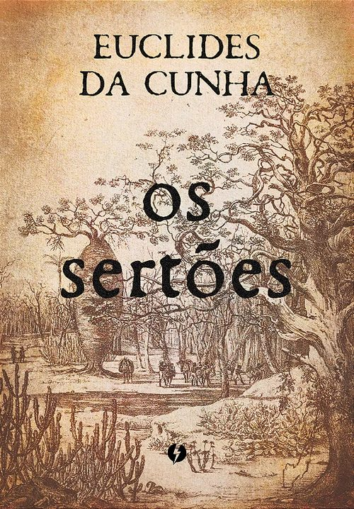
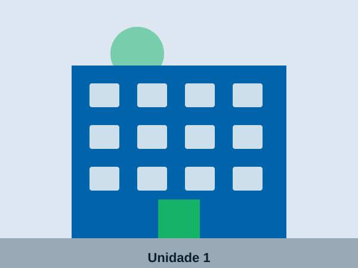
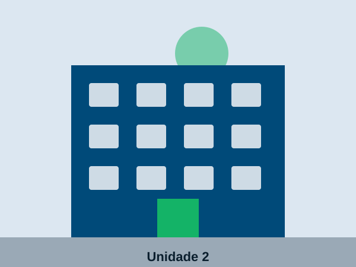
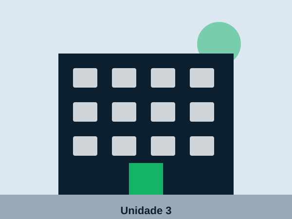

Dom Casmurro
Romance de Machado de Assis narrado por Bento Santiago, o Bentinho, que relembra a própria vida e o ciúme que sentia de Capitu.
Saiba mais
Autor: Machado de Assis
Publicação: 1899
A Biblioteca Digital UniFECAF foi criada para facilitar o acesso dos estudantes a livros, materiais acadêmicos e conteúdos de apoio à aprendizagem, reunindo tudo em uma plataforma simples e intuitiva.
Pela plataforma, o aluno pode visualizar os livros disponíveis, identificar as categorias, conhecer os principais destaques do acervo e encontrar informações sobre os serviços oferecidos pela biblioteca.


Romance de Machado de Assis narrado por Bento Santiago, o Bentinho, que relembra a própria vida e o ciúme que sentia de Capitu.
Autor: Machado de Assis
Publicação: 1899

Narrado por um defunto autor, o romance é considerado o marco inicial do Realismo no Brasil.
Autor: Machado de Assis
Publicação: 1881

Obra do Naturalismo brasileiro que retrata a vida coletiva dos moradores de um cortiço no Rio de Janeiro.
Autor: Aluísio Azevedo
Publicação: 1890

Romance indianista que conta a história de Iracema e do português Martim, ligada às origens do Ceará.
Autor: José de Alencar
Publicação: 1865

A trajetória do major Policarpo Quaresma, um nacionalista idealista, no início da República.
Autor: Lima Barreto
Publicação em livro: 1915

Obra que retrata a Guerra de Canudos, no sertão da Bahia, unindo relato histórico, geografia e análise social.
Autor: Euclides da Cunha
Publicação: 1902

[PREENCHER: nome da unidade 1]
[PREENCHER: endereço da unidade 1]
[PREENCHER: horário de funcionamento da biblioteca na unidade 1]

[PREENCHER: nome da unidade 2]
[PREENCHER: endereço da unidade 2]
[PREENCHER: horário de funcionamento da biblioteca na unidade 2]

[PREENCHER: nome da unidade 3]
[PREENCHER: endereço da unidade 3]
[PREENCHER: horário de funcionamento da biblioteca na unidade 3]
Tem dúvidas sobre o acervo ou sobre os serviços da biblioteca? Fale com a equipe da Biblioteca Digital UniFECAF pelos canais abaixo.
E-mail: [PREENCHER: e-mail da biblioteca]
Telefone: [PREENCHER: telefone da biblioteca]
Atendimento: [PREENCHER: dias e horários de atendimento]